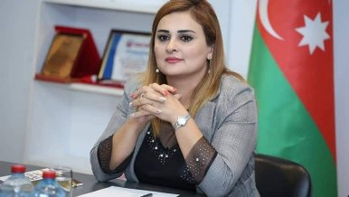

Sənət və ədəbiyyat dərgisi
Haqqımızda
Reklam
Əlaqə
Ana səhifə
Gündəm
Müsahibə/Sorğu
Sənət
Ədəbi gənclik
Kino/Teatr
Fəlsəfə
Foto
Video
Digər
Blog
Səsli kitab
Elektron kitabxana
Ədəbi gənclik
Ədəbi gənclik
23 Avqust 2022 / 10:31
Həbsxanada qələmə alınan Odisseya
Ədəbi gənclik
16 Avqust 2022 / 14:56
Hər iki tərəf məğlubdur
- İlahə Səfərzadənin müsahibəsi
Ədəbi gənclik
16 Avqust 2022 / 14:56
Qumların qadını
- Nicat Həşimzadə yazır
Ədəbi gənclik
27 İyul 2022 / 15:24
Həyatınm təzadlı üzü
- Elmir Həsən yazır
Ədəbi gənclik
19 İyul 2022 / 08:16
Ovqat oğruları
- Fərid Hüseyn yazır
Ədəbi gənclik
06 İyul 2022 / 09:15
“Könlüm keçir Qarabağdan” şeir müsabiqəsi elan olunur

Ədəbi gənclik
06 İyul 2022 / 09:15
Sən də şanssızsan məntək -
Aysel Xanlarqızı Səfərli
Ədəbi gənclik
23 İyun 2022 / 10:40
Son insan - Anar Qsımovun hekayəsi
Ədəbi gənclik
21 İyun 2022 / 08:00
Həyat unudulmaq yarışıdır -
Xatirə Nurgülün yeni şeirləri
Ədəbi gənclik
10 İyun 2022 / 17:00
Məndən demək... Özünüz bilərsiniz -
- Şəhriyar del Gerani yazır
Ədəbi gənclik
06 İyun 2022 / 10:16
Eşq Şərabının aynası -
Fərid Hüseyn yazır
Ədəbi gənclik
02 İyun 2022 / 09:31
Elə bir gündə öpmək istəyirəm ki...
- Gənc fars şairinin minimalist şeirləri
Ədəbi gənclik
01 İyun 2022 / 14:10
Fərid Hüseyn barədə məlumat
Ədəbi gənclik
20 May 2022 / 09:48
Qəbir yeri almaq istəyirəm
Nil İpəyin hekayəsi
Ədəbi gənclik
19 May 2022 / 09:26
Məhəbbət əzəli məhkumiyyətdir -
Nigar Nizamın şeirləri
Ədəbi gənclik
16 May 2022 / 09:23
Nizami Gəncəvidən gələn mesaj
Ədəbi gənclik
16 May 2022 / 09:11
“Çağdaş ədəbiyyatımızda dil və üslub” adlı seminar keçiriləcək
Ədəbi gənclik
08 May 2022 / 08:26
Qiyamətdən fraqmentlər -
Ələsgər Əhmədin yeni şeirləri
1
2